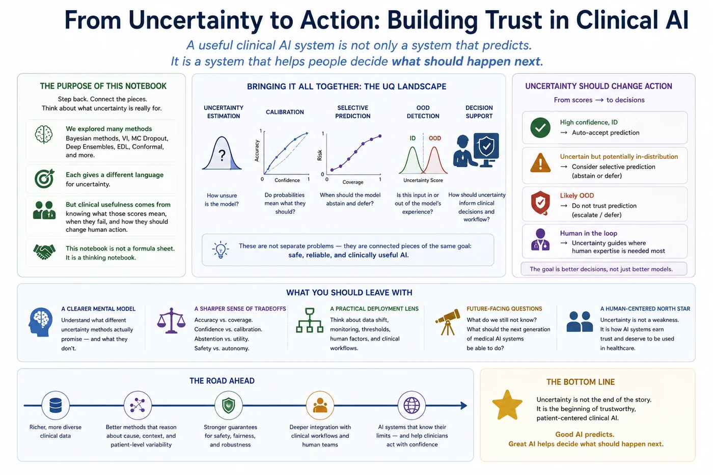

🌌 Session 19 - Final View: Uncertainty, Trust, and the Future of Clinical AI¶
Final notebook
A useful clinical AI system is not only a system that predicts. It is a system that helps people decide what should happen next.

What this notebook is about¶
This notebook closes the course by stepping back from individual methods and asking what uncertainty quantification is really for.
By now, you have seen Bayesian perspectives, variational inference, MC dropout, evidential deep learning, conformal prediction, calibration, risk-coverage analysis, and out-of-distribution detection. Each method gives us a different language for uncertainty. But clinical usefulness does not come from having more uncertainty scores. It comes from knowing what those scores mean, when they fail, and how they should change human action.
This session is not a formula sheet. It is a thinking notebook.
What you should leave with¶
- A clearer mental model of what different uncertainty methods actually promise
- A sharper sense of the tradeoffs between accuracy, calibration, coverage, abstention, and clinical workflow
- A practical way to think about uncertainty in deployment
- A set of future-facing questions about what the next generation of medical AI systems should become
🎯 1. The central lesson of the course¶
The first lesson was simple, but it remains the most important one:
Accuracy does not tell us whether a model knows when it might be wrong.
A classifier can achieve high test accuracy and still be dangerous if its errors are confident, invisible, or concentrated in clinically important subgroups. In medical settings, the question is rarely just, "Did the model predict the right label?" The more important questions are often:
- Did the model express the right amount of confidence?
- Did uncertainty rise on ambiguous, rare, corrupted, or unfamiliar cases?
- Did the uncertainty estimate help the clinician decide what to do next?
- Did the system fail quietly or visibly?
- Did performance hold across hospitals, scanners, patient groups, and time?
Uncertainty quantification matters because clinical decisions are made under incomplete information. A model that refuses to express uncertainty is pretending that the world is cleaner than it is.
Reflective pause¶
Think back to the opening pneumonia screening scenario. Suppose two models have the same accuracy. One is poorly calibrated but highly decisive. The other is slightly less accurate but much better at flagging uncertainty.
Which one would you deploy in an emergency department? What extra evidence would you need before answering?
🗺️ 2. The course arc in one view¶
| Theme | Core question | Why it matters clinically |
|---|---|---|
| Why uncertainty matters | What does accuracy hide? | Prevents blind trust in confident errors |
| Aleatoric vs epistemic uncertainty | Is the case inherently ambiguous, or is the model underinformed? | Separates noise in the patient data from gaps in model knowledge |
| Bayesian thinking | What would it mean to represent uncertainty over models? | Treats predictions as distributions rather than single answers |
| Variational inference | Can we approximate Bayesian learning efficiently? | Makes Bayesian reasoning more practical, but approximate |
| MC dropout | Can stochastic forward passes reveal uncertainty? | Gives a simple uncertainty baseline using existing neural networks |
| Deep ensembles | Can multiple independently trained models capture uncertainty? | Provides a strong, practical baseline for uncertainty |
| Evidential deep learning | Can the model predict evidence for each class? | Offers fast uncertainty estimates, but requires careful interpretation |
| Conformal prediction | Can we guarantee coverage under assumptions? | Produces prediction sets with a statistical promise |
| Calibration | Do predicted probabilities mean what they claim? | Helps clinicians interpret risk scores as probabilities |
| Risk-coverage | What happens if the model abstains on uncertain cases? | Connects uncertainty to workload, triage, and safety |
| OOD detection | Does the input look unlike the training world? | Flags cases where ordinary confidence may be misleading |
This table is not a ranking. It is a map. Different methods answer different questions, and a deployment-grade system may need several of them working together.
🧭 3. Five questions every uncertainty method must answer¶
When evaluating any uncertainty method, ask these five questions before asking whether it is "state of the art."
1. What kind of uncertainty is it trying to capture?¶
Some methods are better at modeling epistemic uncertainty: uncertainty due to limited data, unfamiliar inputs, or model ignorance. Others are better at representing predictive ambiguity or calibration. Conformal prediction gives coverage guarantees, but it does not automatically explain why a case is uncertain.
2. What is the unit of uncertainty?¶
Is uncertainty attached to a class probability, a prediction set, a segmentation mask, a patient trajectory, a model parameter, or an input distribution? A single scalar uncertainty score may be convenient, but clinical uncertainty is rarely scalar.
3. What assumptions make the estimate valid?¶
Every method rests on assumptions. Conformal prediction depends on exchangeability. Calibration depends on validation data that resembles future deployment data. OOD detection depends on what is treated as out-of-distribution. Bayesian approximations depend on the quality of the approximation.
4. What action should uncertainty trigger?¶
Uncertainty is only useful if it changes behavior. It might trigger radiologist review, additional imaging, delayed automation, a second model, a warning message, or a wider prediction set. If the system cannot explain what should happen when uncertainty is high, the uncertainty estimate is unfinished.
5. How does the method fail?¶
Good evaluation includes failure analysis. Does the method become overconfident under domain shift? Does it abstain too often? Does it hide subgroup errors? Does it produce uncertainty that looks mathematically elegant but does not match clinical risk?
⚖️ 4. The deeper tension: probability is not the same as trust¶
A calibrated probability is valuable, but it is not the same thing as trustworthiness.
A model can be calibrated on average and still fail badly for rare populations. It can achieve strong OOD AUROC and still miss clinically meaningful distribution shifts. It can produce valid conformal coverage globally while giving very large prediction sets for the patients who most need clarity. It can have a beautiful risk-coverage curve and still be hard to integrate into a real clinical workflow.
Trust is not a property of a number. It is a property of a system in context.
For clinical AI, trust depends on at least four layers:
| Layer | Question |
|---|---|
| Statistical | Are the probabilities, intervals, or sets empirically valid? |
| Clinical | Do the uncertainty signals correspond to meaningful clinical ambiguity or risk? |
| Operational | Can the workflow absorb uncertainty without overload? |
| Ethical | Are uncertainty and error distributed fairly across patients and sites? |
A system can succeed at one layer and fail at another. This is why uncertainty quantification must be evaluated as part of a decision process, not just as a mathematical output.
🔬 5. Method comparison as judgment, not memorization¶
It is tempting to ask, "Which uncertainty method is best?" That is usually the wrong question.
A better question is:
Best for what decision, under what constraints, with what failure mode?
| Method family | Strength | Common limitation | Best used when |
|---|---|---|---|
| Variational inference | Principled Bayesian framing | Approximation quality can be hard to judge | You want model uncertainty and can afford training changes |
| MC dropout | Simple, practical, easy to add | Often underestimates uncertainty and depends on dropout behavior | You need a lightweight baseline |
| Deep ensembles | Strong empirical uncertainty baseline | Computationally expensive | Reliability matters more than inference cost |
| Evidential deep learning | Fast single-pass uncertainty | Evidence can be overinterpreted without careful validation | You need efficient prediction-time uncertainty |
| Conformal prediction | Coverage guarantees under assumptions | Prediction sets may be too large or poorly localized | You need a clear statistical promise |
| Calibration methods | Improve probability interpretation | Do not solve OOD or subgroup failure alone | Probability scores will guide decisions |
| Risk-coverage analysis | Connects uncertainty to abstention | Depends on a policy for rejected cases | You need to decide what the model should handle automatically |
| OOD detection | Tests unfamiliarity | OOD is not one thing; definitions matter | Deployment environments may shift |
The mature view is not method loyalty. It is method literacy.
🏥 6. From uncertainty score to clinical action¶
A model output is not the end of the pipeline. It is the beginning of a decision.
A practical uncertainty-aware deployment can be framed as a loop:
- The model predicts.
- The system estimates uncertainty.
- The system decides whether the prediction is actionable.
- The clinician sees either a recommendation, a warning, a prediction set, or an escalation.
- Outcomes are monitored after deployment.
- Drift, calibration, subgroup performance, and abstention rates are audited over time.
The key point is that uncertainty should not merely decorate a prediction. It should participate in the workflow.
Example deployment policy¶
| Model state | System behavior |
|---|---|
| High confidence, calibrated, ID-like input | Show prediction with normal decision support |
| Moderate uncertainty | Show prediction plus caution and relevant alternatives |
| High uncertainty | Recommend expert review or additional evidence |
| OOD warning | Do not automate; route to human review |
| Calibration drift detected | Reduce automation threshold and trigger model audit |
This kind of policy is where uncertainty becomes clinically meaningful. Without a policy, uncertainty is just another number on a screen.
🧩 7. The hard problems that remain¶
Uncertainty quantification is powerful, but it is not solved. Several hard problems remain open.
7.1 Uncertainty is often too compressed¶
Many systems reduce uncertainty to one number. But a clinician may need to know whether the uncertainty comes from image quality, an ambiguous anatomical pattern, conflicting evidence, scanner shift, patient demographics, or missing clinical history.
Future systems should move from scalar uncertainty toward structured uncertainty explanations.
7.2 Distribution shift is not a rare event¶
Hospitals change. Imaging devices change. Protocols change. Patient populations change. Disease prevalence changes. A model that was calibrated last year may not be calibrated now.
The future of uncertainty will require continuous monitoring, not one-time validation.
7.3 Foundation models change the question¶
Large pretrained models may generalize better across settings, but they also introduce new uncertainty problems. Their training data can be opaque. Their failure modes can be subtle. Their confidence may reflect pretraining artifacts rather than clinical reliability.
A bigger model is not automatically a more honest model.
7.4 Human-AI interaction is still underdeveloped¶
Even a perfect uncertainty estimate can be misused if it is displayed poorly. Clinicians may over-trust, under-trust, ignore, or misunderstand uncertainty signals.
The interface is part of the model's safety system.
7.5 Fairness and uncertainty are connected¶
Uncertainty often rises where data are sparse. That can be helpful, because it reveals model ignorance. It can also be harmful, because it may shift more burden onto already underserved groups.
A fair uncertainty-aware system must ask not only who receives correct predictions, but who receives useful confidence, useful abstention, and useful follow-up.
🔭 8. Future directions worth thinking about¶
The next generation of uncertainty-aware medical AI will likely move beyond isolated uncertainty scores. Some important future directions are:
Decision-centered uncertainty¶
Instead of asking, "How uncertain is the model?" we should ask, "How much does this uncertainty matter for the next decision?" A tiny uncertainty difference may be irrelevant for one workflow and critical for another.
Multimodal uncertainty¶
Clinical decisions combine images, notes, labs, history, vitals, and clinician judgment. Future systems need to express uncertainty across multiple evidence streams, not just a single image.
Causal and counterfactual uncertainty¶
A model may know that an image pattern correlates with disease, but not whether it reflects the causal process clinicians care about. Future uncertainty methods may need to distinguish statistical ambiguity from causal uncertainty.
Regulatory-grade uncertainty evidence¶
As AI systems enter clinical practice, uncertainty claims will need to be documented, audited, and justified. It will not be enough to report an uncertainty metric. Developers may need to show how uncertainty affects safety, workload, equity, and patient outcomes.
Human-centered uncertainty interfaces¶
The best uncertainty estimate is useless if it is misunderstood. Future work must study how clinicians interpret uncertainty displays, prediction sets, abstention messages, and OOD warnings in real workflows.
The goal is not to build a model that is always confident. The goal is to build a system that is appropriately confident, visibly uncertain, and clinically useful when the world becomes messy. That is the deeper promise of uncertainty quantification.